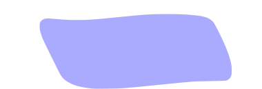
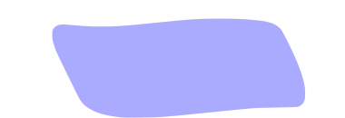
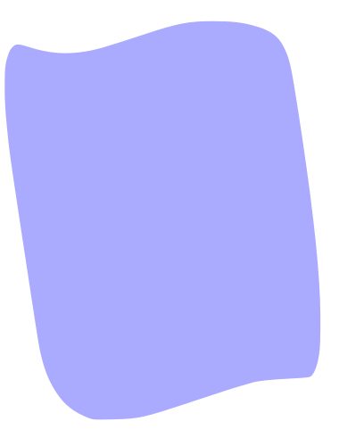

Camille Orsoni
Développement web.

Qui suis-je ?
Diplômée d'un master 2 en management interculturel, j'ai travaillé pendant 5 ans en tant que chef de projet et communicante dans les domaines de l'assurance et de la santé, dans des environnements internationaux.
Durant ces différentes expériences, j'ai découvert le développement web lors des projets IT sur lesquels je travaillais. Aujourd'hui, j'ai décidé de me réorienter dans ce domaine en préparant un titre professionnel "Développeur web et mobile" (titre RNCP bac+2).
 

Qui suis-je ?
Diplômée d'un master 2 en management interculturel, j'ai travaillé pendant 5 ans en tant que chef de projet et communicante dans les domaines de l'assurance et de la santé, dans des environnements internationaux.
Durant ces différentes expériences, j'ai découvert le développement web lors des projets IT sur lesquels je travaillais. Aujourd'hui, j'ai décidé de me réorienter dans ce domaine en préparant un titre professionnel "Développeur web et mobile" (titre RNCP bac+2).

Mes compétences
Mon parcours
2019 : Préparation du titre professionnel "Développeur web et mobile" (titre RNCP bac+2) à Simplon

Avril 2016 - Octobre 2017 : Chef de projet junior au sein du réseau médical international chez AXA Partners (Châtillon)
Septembre 2015 - Mars 2016 : Chargée de communication interne français/anglais au sein du GIE AXA (Paris)
Septembre 2014 - Août 2015 : Assistante communication au sein du département Responsabilité d'entreprise du groupe AXA (Paris)
Novembre 2017 - juillet 2019 : chef de projet junior en développements externes et coopération internationale à la Fondation Adolphe de Rothschild (Paris)
2015 : Obtention du diplôme master 2 de l'ISIT en management interculturel.
Avril - Juillet 2014 : Assistante marketing et fundraising à l'AMREF (Londres)
Juin - Décembre 2013 : Assistance en communication et RSE chez Orangina-Schweppes Group (Levallois-Perret)
2011 : Semestre d'échange universitaire (programme Erasmus) à Swansea University, Royaume-Uni
2009 : Obtention L1 de bilicence anglais/espagnol LLCE à l'ICP
Mon parcours
2019 : Préparation du titre professionnel "Développeur web et mobile" (titre RNCP bac+2) à Simplon
Novembre 2017 - juillet 2019 : chef de projet junior en développements externes et coopération internationale à la Fondation Adolphe de Rothschild (Paris)
Avril 2016 - Octobre 2017 : Chef de projet junior au sein du réseau médical international chez AXA Partners (Châtillon)
Septembre 2015 - Mars 2016 : Chargée de communication interne français/anglais au sein du GIE AXA (Paris)
Septembre 2014 - Août 2015 : Assistante communication au sein du département Responsabilité d'entreprise du groupe AXA (Paris)
2015 : Obtention du diplôme master 2 de l'ISIT en management interculturel.
Avril - Juillet 2014 : Assistante marketing et fundraising à l'AMREF (Londres)
Juin - Décembre 2013 : Assistance en communication et RSE chez Orangina-Schweppes Group (Levallois-Perret)
2011 : Semestre d'échange universitaire (programme Erasmus) à Swansea University, Royaume-Uni
2009 : Obtention L1 de bilicence anglais/espagnol LLCE à l'ICP
Quelques réalisations


Quelques réalisations
Contact
Un projet ? N'hésitez pas à me contacter.